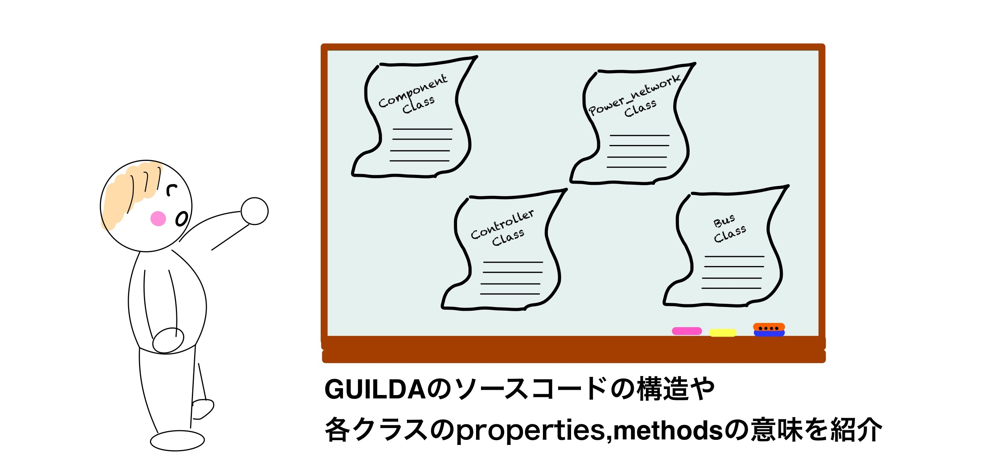

Source Code Explanation¶
This section explains the functions, properties, methods, classes, etc. used in the source code of GUILDA.
Contents:
- Main Classes.
- Other Classes.
- Functions in the "+function" Directory.
- Functions in the "+tools" Directory.
Main Classes¶
In GUILDA there are mainly five "super classes", from which the rest are derived from. This section describes the member variables and methods implemented in these five super classes.
Other Classes¶
Explore Classes:
In GUILDA, the basic rule is that classes and functions that are intended to be directly used by users, should have their purpose and usage commented out at the beginning of the "m-file". Thus, it is possible to find out such information by: 1. Opening the "m-file" or 2. by using the help or doc function as follows
%If you want to examine the function of sample.m.
help sample
doc sample
Example: The generator_1axis class, which represents a 1-Axis Synchronous Generator Model, is a child class of the component class that implements the equipment model. Therefore, please refer to the following component class description page for the explanation on its member variables and methods that the generator_1axis class inherits from the component class. For the member variables that are defined in the generator_1axis class, those can accessed by executing
>> help generator_1axis
Search Classes:
To see the list of classes that are implemented on GUILDA, the function function.class_dictionary('class_name').
For more information please refer to the "+function" in this page, which contains a function for searching for classes.
%To list all the classes that inherit from the "handle" class (no argument given).
>> function.class_dictionary();
%To search for a specific class (e.g., the component class).
>> function.class_dictionary('component');
Example: List all the classes that inherit from the "handle" class (no argument given).
Search : "handle" class．．．
handle class：
===================================================
Link class tree
===================================================
[help], [doc] handle
[help], [doc] ┣━ tools.simulationResult
[help], [doc] ┣━ tools.Reporter
[help], [doc] ┣━ power_network
[help], [doc] ┃ ┣━ network_IEEE68bus
[help], [doc] ┃ ┗━ network_sample3bus
[help], [doc] ┣━ avr
[help], [doc] ┃ ┣━ avr_IEEE_ST1
[help], [doc] ┃ ┗━ avr_sadamoto2019
[help], [doc] ┣━ branch
[help], [doc] ┃ ┣━ branch_pi
[help], [doc] ┃ ┗━ branch_pi_transformer
[help], [doc] ┣━ bus
[help], [doc] ┃ ┣━ bus_PQ
[help], [doc] ┃ ┣━ bus_PV
[help], [doc] ┃ ┗━ bus_slack
[help], [doc] ┣━ component
[help], [doc] ┃ ┣━ component_empty
[help], [doc] ┃ ┣━ generator_1axis
[help], [doc] ┃ ┣━ generator_classical
[help], [doc] ┃ ┗━ load_impedance
[help], [doc] ┣━ controller
[help], [doc] ┃ ┗━ controller_broadcast_PI_AGC
[help], [doc] ┣━ governor
[help], [doc] ┗━ pss
===================================================
Functions in the "+function" Directory¶
This directory stores functions that may be useful for work efficiency in using GUILDA.
In these documents, its purpose and usage is also commented out at the begining of the "m-file". Thus, the file can be directly explored, or by using the help or doc functions. Please take a look at them!
Functions in the "+tools" Directory¶
This directory stores functions used in the code of classes and functions. It is created for the purpose of modularization of frequently used executables and for better listing of the source code. Therefore, the code under this directory is not a function directly used by the user and will not be explained in this tutorial.